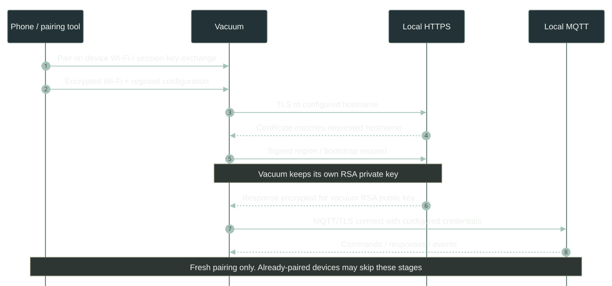

Roborock local-cloud authentication and the eMudhra CA incident
Comparing hostname injection with accepted certificate-based vendor impersonation: key boundaries, onboarding, firmware differences, persistent operation and a conditional 17-dimension capability matrix.
How the local server actually works
The project replaces Roborock's cloud-facing control plane with a local HTTPS and MQTT implementation. Its key achievement is to make the vacuum choose the local server's hostname before ordinary TLS authentication begins.

01.1 — Hostname selection precedes certificate validation
During supported onboarding flows, a region-derived field is incorporated into a service URL. The project documents a URL/hostname injection technique that directs the vacuum to an operator-controlled domain. The vacuum then requests that hostname, allowing the local endpoint to present an ordinary publicly trusted certificate for that exact name.
DNS-only rewrite
Device requests the genuine Roborock hostname, but DNS sends its TCP connection to a local IP.
Typically fails: the local server's own-domain certificate does not match the requested Roborock hostname.
Provisioning redirect
Device is provisioned to request the operator's own domain; local DNS maps it to the LAN server.
Can succeed: the certificate matches the hostname the device actually requested.
Central distinction. TLS authenticates a peer relative to a hostname. It does not itself prove that the device was authorized to choose that hostname as its vendor cloud endpoint.
01.2 — Recovering the device's RSA public key
The encrypted registration/bootstrap protocol presents another obstacle. Roborock's backend needs the vacuum's RSA public key to construct encrypted replies, yet the public key is not directly exposed in the relevant flow. The vacuum does, however, transmit RSA PKCS#1 v1.5 signatures over known request data.
gcd(s₁ᵉ − EMSA(m₁), s₂ᵉ − EMSA(m₂)) ≈ n s = signature; e = public exponent (commonly 65537); n = public modulus. Independent samples may produce n times a removable cofactor.
Because the signature encoding is deterministic and the signed messages are known, multiple signatures constrain the hidden modulus. The implementation can recover and verify a candidate public key without extracting the vacuum's private key or breaking RSA's secrecy assumptions.
01.3 — Emulating a service, not just a TLS endpoint
A replacement HTTPS server can answer registration requests, but a useful local cloud must also provide the service configuration, credentials, message routing and responses the vacuum expects after pairing. This is not just one certificate or one redirected socket: several clients and services must agree on which addresses, protocols and authentication material to use.
- Provision: set up supported pairing so the device knows where to connect.
- Connect: negotiate legitimate TLS with a certificate for the configured hostname.
- Bootstrap: use the recovered public key to build the encrypted response expected by firmware.
- Operate: route REST, MQTT messages, maps and commands within a local service stack.
For the official smartphone app, the repository documents distinct integration options, including an iOS proxy-assisted flow and an Android app-modification route. That phone-side trust setup is separate from the vacuum's own TLS verification.
These three communication paths have different jobs and are not interchangeable. HTTPS is the registration and service-configuration path; MQTT over TLS is the ongoing command-and-event channel; and local TCP supports direct device-facing features where available. “LAN” describes where packets travel, not a third application protocol. TLS acceptance by the vacuum does not automatically configure or authenticate the phone app or controller.

Consequently, replacing the first HTTPS endpoint does not by itself implement the cloud. The vacuum needs enough registration data to connect to the MQTT broker, the broker must understand the device's credentials and topics, and the phone may require a separate redirection procedure. Missing a later connection can leave onboarding apparently successful while app controls, maps or live telemetry remain incomplete.
01.4 — A message-level view of fresh onboarding
Figure 02 describes the system's connections; this sequence adds their ordering during one fresh pairing. Configuration supplies the Wi-Fi and region information, the vacuum chooses its HTTPS destination, and the encrypted registration response supplies the material required for later MQTT operation. These messages cross distinct cryptographic boundaries, not one undifferentiated “authenticated Roborock connection.” [1–2]

More concretely, onboarding begins over the vacuum's temporary Wi-Fi network. The phone sends a public key, receives session material encrypted for that key, then sends Wi-Fi and regional data protected with the negotiated AES session key. The vacuum uses the regional field to assemble a cloud URL; the historical input-validation flaw makes a different hostname possible. The server must still return an encrypted response that the device understands. [2]
01.5 — Why the public-key trick is not an RSA break
With deterministic RSA signature padding, the known signed message and signature produce an integer divisible by the missing public modulus. Distinct signed samples reveal a common factor; verification checks that the reconstructed key is correct. The device private key stays on the device. An equivalent reconstruction requires knowing the exact signature encoding and exponent. The original account describes SHA-256 signatures; newer v2 work introduces a SHA-384 recovery path, so those details are firmware/protocol-specific rather than universal. [2, 6]
01.6 — What is (and is not) reproduced
| Service | Local replacement's responsibility | Remaining boundary |
|---|---|---|
| HTTPS onboarding | Return compatible region/service descriptors and device-encrypted bootstrap. | The vacuum may require a specific pairing state or message sequence. |
| MQTT relay | Bridge device-to-cloud and client-to-device topics, authentication, commands and replies. | Session keys, credentials and per-model message schemas must align. |
| Local TCP | Preserve the app/device-local channel and supported features. | Not automatically replaced by successful cloud TLS. |
| Map and device API | Provide compatible API/metadata, map transfer and selected automations. | Cloud-dependent features may remain incomplete. |
| Official mobile app | Adjust the app's service-endpoint information via the documented companion procedure. | That flow has its own phone-side TLS and account prerequisites. |
What gets bypassed — and what does not
The distinction is not “TLS is broken.” The weakness lies upstream of TLS: who gets to choose the destination, and which application protocol assumptions remain enforceable.
02.1 — Distinguish the keys instead of saying “the Roborock private key”
Most misconceptions arise from conflating a website's TLS key, a CA signing key and a device's RSA registration key. The two candidate approaches need neither the original vendor TLS private key nor the vacuum's private key. Their difference is how a replacement key is accepted as the TLS server identity.
| Cryptographic material | Hostname injection | Accepted eMudhra certificate |
|---|---|---|
| Original Roborock TLS private key | Not needed | Not needed |
| Replacement TLS server's private key | Owned by the operator | Owned by the operator |
| Compromised CA signing key | Not needed | Authorizes the replacement certificate |
| Vacuum's RSA private key | Not needed / not disclosed | Not needed / not disclosed |
| Vacuum's RSA public key | Recovered for encrypted bootstrap | Still needed if the same bootstrap path is used |
| Independent vendor application-signing key (if required) | Not gained | Not gained |
Certificate semantics. A certificate attests that a particular public key is authorized for a name. There can be multiple distinct valid server keys for one hostname. Neither method depends on copying Roborock's original server key.
| Mechanism | Role | Local-server approach |
|---|---|---|
| DNS resolution | Maps hostnames to addresses | Local DNS directs a configured hostname to a LAN address. |
| TLS hostname check | Binds a certificate to the requested name | Preserved. Use a valid certificate for an operator-controlled name. |
| Public CA trust | Establishes certificate-issuer authority | Preserved. Subject to the firmware's bundled trust anchors. |
| Bootstrap endpoint binding | Determines the intended cloud service | Changed. Supported provisioning permits an alternate service endpoint. |
| Device RSA private key | Signs device requests | Not extracted. Only the public modulus is reconstructed. |
| Encrypted bootstrap | Protects device registration response | Reimplemented using the reconstructed public key. |
| Application commands | Roborock protocol semantics | Requires accurate REST and MQTT protocol emulation. |
| Certificate pinning | Restricts acceptance to specific keys | Model-dependent. Could prevent this approach. |
A crucial distinction is that a certificate can be valid for the hostname the device requested, even if the device was led to request a hostname its manufacturer never intended. The repository's pairing method changes the vacuum's configured destination to a domain the operator controls. The operator then presents a normal certificate for that domain. TLS correctly verifies the requested hostname and issuer; it has not been cryptographically bypassed.
What TLS does not determine is whether provisioning was authorized to change the device's intended cloud server. That belongs to an earlier trust boundary: insufficiently constrained configuration data influences endpoint choice. This also explains why DNS-only redirection of the original Roborock hostname normally fails when the replacement certificate names another domain. The later eMudhra hypothesis instead keeps the original hostname and supplies a different accepted TLS identity for it. The figure below distinguishes those decisions without treating this argument as a quotation.

02.2 — Five separate gates to functional local-cloud control
TLS acceptance is only the second gate in a larger workflow. Treating it as a binary “can impersonate the cloud” result overstates what a CA compromise alone guarantees. All five conditions must be met for sustained operation.

For example, a replacement server may receive traffic and pass certificate validation (gates 1–2) but fail because the device sends account state or messages the emulator cannot interpret (gates 3–4). A freshly provisioned device might also register successfully but reconnect to a vendor destination after a restart if no persistent endpoint was established (gate 5). These are separate limitations even when the TLS session itself is perfectly valid.
02.3 — Independent application signatures would defeat both
Encrypting a bootstrap reply to the vacuum is different from producing a vendor-signed response authenticated by the vacuum. Recovery of the device's RSA public key permits the former, not necessarily the latter. If a firmware revision requires a vendor-controlled application signature, TLS-only impersonation and onboarding hostname injection cannot manufacture that signature. The same caveat applies to cloud account authorization and app-side session claims.
Firmware is the real boundary
There is no single “Roborock vulnerability” that applies to every model. Firmware families vary in their onboarding format, CA trust store, certificate validation, cloud bootstrap and supported protocol versions.
The moving compatibility target
The current project README describes support for many modern v2 protocol models and greenfield onboarding. Its tested-device list nevertheless identifies specific unsupported Q-series and recent devices. Some older documentation still describes an initial-account-registration requirement; treat that as a documentation-version conflict, not a universal rule.
| Variable | Possible restriction | Practical implication |
|---|---|---|
| Onboarding v1/v2 | Changed region endpoints and data formats | Older injection or bootstrap assumptions may no longer apply. |
| Certificate anchors | Old or restricted CA bundles | A valid public certificate might still be rejected. |
| Pinning / allowlists | Certificates or hostnames are constrained | Self-hosted endpoint substitution may be impossible. |
| Application encryption | Different key exchange or message framing | Public-key reconstruction alone may not complete pairing. |
| Feature completeness | Cloud-only features remain | Firmware updates, camera streaming or schedules may be incomplete. |
Important correction to early explanations. “Newer firmware is unsupported” is too broad. Project documentation has evolved; check the live compatibility matrix for model-and-firmware-specific reports.
The project currently lists entry-level Q7/Q10 variants and several recent models as unsupported, while confirming operation on multiple S-series and QRevo devices. These are project-reported outcomes, not independent proof of a security bypass across the fleet.
03.1 — A patch can target different boundaries
| Firmware change | Hostname-injection path | Accepted CA path |
|---|---|---|
Allowlist region / reject malformed token.r | Blocked for this entry route | Does not inherently block vendor-hostname TLS impersonation |
| Pin server keys rather than general CA trust | May block operator certificate | May block fraudulent CA-issued certificate |
| Change v1/v2 bootstrap crypto or required message order | Requires updated emulator | Requires updated emulator |
| Require independent application-level server signature | Cannot satisfy with TLS or device public key alone | Same limitation |
| Upgrade trusted roots or revocation policy | Could affect chosen own-domain certificate | Can specifically reject compromised CA |
Consequently, “new firmware” is not a sufficient explanation for incompatibility. A failure might be at the region-input boundary, at certificate policy, at v2 public-key recovery, during registration state exchange, or later during MQTT operations. Each requires different evidence.
03.2 — V2 is evolving, not universally unsupported
The repository's 1.1.0-era release notes describe V2 region public-key recovery using SHA-384 signatures; its tested-vacuum matrix lists multiple successful recent models and other devices as untested or unsupported. Do not extrapolate a single protocol version's handling or the S7 author's original SHA-256 example to every generation. [3, 6]
03.3 — Device state affects whether a new entry route is useful
Fresh onboarding supplies the signed /region exchanges and opportunities to provision endpoints that the original emulator expects. A vacuum already registered with Roborock may instead proceed directly to session renewal or MQTT reconnection. An accepted certificate can make that traffic visible at a replacement server, but it does not retroactively cause the device to repeat provisioning. Whether the emulator can bootstrap that pre-existing state is an open source-code and firmware question.
eMudhra changes the issuer, not the protocol
In October 2026, eight eMudhra intermediate CA private keys were reported compromised due to weak key generation. For unprotected clients that still trust an affected chain, a fraudulent certificate could authenticate a hostname the attacker does not own.

For everything below, assume that a replacement certificate issued under an affected eMudhra intermediate is accepted by the target client's TLS verifier for the genuine Roborock hostname. This deliberately removes the PKI acceptance question from the architectural comparison. It does not assume network-path control, application authorization, pairing state, persistent endpoint changes, or model-specific compatibility. Outside this thought experiment, the issuer may be distrusted, absent from the device's trust store, rejected by revocation checks or disallowed by certificate pinning.
04.1 — Equivalent TLS, different claimed identity

04.2 — Detailed capability-by-capability comparison
The outcomes below explicitly separate capability at TLS from actual end-to-end support. “eMudhra advantage” means an architectural possibility under the assumption above, not a demonstrated Roborock success rate.
| Dimension | Hostname injection | eMudhra accepted TLS | Assessment |
|---|---|---|---|
| Finish a trusted HTTPS handshake | Yes, for configured own domain | Yes, for original vendor domain | Equivalent at TLS |
| Authenticate as the original Roborock name | No: changes the requested name | Yes: matches the unchanged vendor name | CA stronger |
| Require vendor's TLS private key | No | No | Equivalent |
| Redirect without provisioning access | Not through this technique alone | Possible with separate network-path redirection | CA stronger |
| Strictly validated region/hostname input | Prevents that injection entry | Does not inherently affect original-host TLS | CA stronger at TLS |
| Already paired vacuum | Typically needs fresh provisioning | May reach existing cloud calls | CA potential advantage |
| Preserve original URL / Host semantics | Can alter URL/host-derived inputs | Original hostname can remain | CA stronger conditionally |
| Preserve stored cloud config | Changes endpoints during pairing | May leave stored config unchanged | CA stronger at entry |
| Obtain vacuum's private key | No | No | Equivalent |
| Obtain device RSA public key | From observed signatures | Requires same evidence when needed | Equivalent if requests occur |
| Complete encrypted bootstrap | Implemented for supported flows | Requires compatible protocol state | Not automatically equivalent |
| Roborock account authorization | Not granted by TLS | Not granted by TLS | Equivalent limitation |
| Independent vendor app signatures | Cannot create | Cannot create | Equivalent limitation |
| Broader ecosystem client HTTPS origins | Change each destination separately | Potentially authenticate multiple names | CA potential advantage |
| Persistent offline use | Established by local configuration on success | Needs continuing redirection or accepted new endpoints | Injection stronger by default |
| Need for compromised CA | None | Yes, in this comparison | Injection stronger in practice |
| Current project's tested end-to-end path | Integrated and reported working | No integrated tested path documented | Injection stronger in evidence |
04.3 — Where CA impersonation genuinely broadens the reachable state space
Patched hostname input. If a firmware version rejects malformed region values, the repository's provisioning redirect loses its initial mechanism. A device may still be susceptible to accepted certificates issued for the original cloud name, provided traffic reaches the replacement server. Thus hostname validation at provisioning is not a substitute for robust PKI protections.
Already operational devices. Instead of re-entering the pairing interface, a network intermediary could encounter a device that still calls its normal cloud origin. This expands the possible starting states. However, a standard reconnect is not the same message sequence as registration. The emulator might lack the relevant account tokens, session state or message-handling paths.
Hostname-sensitive applications. If a client binds a token audience, HTTP Host, signature input or routing policy to a vendor hostname, preserving that name may avoid mismatches. Whether Roborock firmware actually implements each of these checks is unverified; this is a general protocol benefit rather than a confirmed model-specific bypass.
Other clients. Multiple HTTPS clients and origins could theoretically be affected if each separately accepts the chain and the relevant traffic is routed through a replacement server. The phone app, the vacuum and MQTT/TLS endpoints have different trust and authorization contexts. A CA compromise does not unify them.
04.4 — Where the documented provisioning approach remains stronger
Durable redirection. The documented onboarding method establishes the operator's backend as the intended endpoint. Certificate impersonation of a vendor hostname, by itself, leaves the vacuum configured for that hostname. It can therefore depend on continuing DNS/path control unless the application accepts persistent alternative endpoints.

Maintainability and proven behavior. The legitimate own-domain route avoids reliance on compromised keys, inconsistent embedded trust stores and emergency distrust rollouts. It is also the route the repository implements, documents and tests. That evidence makes it a stronger practical deployment choice, notwithstanding the CA route's broader theoretical TLS identity capability.
04.5 — Scenario matrix under the accepted-certificate assumption
| Starting scenario | Hostname injection | Accepted eMudhra identity |
|---|---|---|
| Fresh, supported pairing | Documented end-to-end route | Possible but different setup |
| Already paired, avoid factory/pairing reset | Not a direct fit | Potentially reaches existing connections |
| Strict region/hostname field validation | Entry may be blocked | May pass TLS for original hostname |
| Device binds protocol values to vendor host | Possible mismatch | Host preservation may help |
| Independent vendor response signature required | Fails without signing capability | Also fails |
| Firmware changes registration protocol | Implementation change needed | Implementation change needed |
| Reliable offline use after completed migration | Documented objective | Conditional on persistent redirect/config |
| Only network-path control available | No direct pairing lever | Potential TLS entry point |
04.6 — What would actually settle the stronger-route question?
The most useful next investigation is a read-only source/state-machine comparison: which stages in the repository require new-onboarding messages, which runtime handlers support already-connected sessions, and which credentials are learned only during pairing? If an emulator can handle a pre-paired device's normal requests without reprovisioning, accepted vendor-hostname TLS credentials offer a materially broader entry path. If key/session acquisition requires the fresh pairing sequence, a stronger TLS identity alone may bring little extra usable functionality.
04.7 — Could it replace Roborock's hostname injection?
Conceptually, yes — at the TLS layer. If an affected firmware trusts a compromised intermediate, lacks effective revocation enforcement and pinning, and is directed to a different server while requesting a genuine vendor hostname, an attacker-controlled endpoint could pass ordinary chain and hostname checks.
| Obstacle | Self-hosted project | Compromised trusted CA |
|---|---|---|
| Original hostname | Replaced during supported pairing | Could remain unchanged |
| TLS identity | Legitimate certificate for own domain | Fraudulent certificate may match vendor name |
| Network destination | Local DNS and configuration | Still requires an independent interception/redirection position |
| RSA bootstrap response | Public-key reconstruction | Still unsolved by CA compromise |
| REST & MQTT semantics | Locally implemented | Still required |
04.8 — Why the embedded trust store matters outside the assumption
Google reported that the affected eight intermediate CA keys suffered insufficient cryptographic entropy, while six of the intermediates were relevant to publicly trusted TLS issuance. Google also reported no logged TLS certificates chaining to those six before its emergency block; this matters for CT-enforcing clients. These browser/Android protections are not evidence that a given embedded Linux vacuum has received an equivalent update. [4–5]
Chrome and Firefox began blocking affected intermediates on 17 October 2026; Mozilla also announced NSS trust-store changes. Embedded clients may not receive browser-style blocklists, and may retain older trust anchors for years. That increases potential exposure — but it does not establish whether any Roborock firmware trusts the relevant CA chain.
What is established
- Eight intermediate private-key compromises were publicly confirmed.
- Browser vendors distributed emergency distrust measures.
- Ordinary TLS chain validation depends on client trust configuration.
What remains unverified
- Which Roborock trust stores include an affected chain.
- Whether revocation or pinning blocks it on a given model.
- Whether the hypothetical TLS path could complete actual pairing.
Conclusion. The original project demonstrates a provisioning trust-boundary problem. The eMudhra incident demonstrates a separate public-PKI trust failure. They can be analyzed together, but one does not prove exploitability of the other on a particular device.
Primary sources & reading
The project mechanisms are grounded in the author's technical writeup and its compatibility/release documentation. The CA incident details come from browser-vendor announcements. The expanded side-by-side capability analysis is adapted from the reader-provided comparison, and its hypothetical outcomes are explicitly marked. Snapshot: 21 October 2026.
- Roborock Local Server — repositoryArchitecture, scope, service features and current support claims.
- Roborock Local Server — technical writeupHostname-selection weakness, TLS, RSA modulus recovery and messaging protocol.
- Tested vacuums and certificate compatibilityModel-specific outcomes; consult the latest revision before interpreting firmware support.
- Mozilla Security Blog — eMudhra incident17 October report; OneCRL response and subsequent NSS update.
- Google Security Blog — Chrome/Android responseCompromised intermediates, insufficient key entropy and CRLSet blocking.
- Local Roborock Server — releases and V2 SHA-384 recoveryRecent release history; V2 public-key recovery and compatibility evolution.
- eMudhra — official incident statementCA operator response and public investigation updates.
Comparison provenance: the separate accepted-eMudhra-certificate assumption and detailed scenario/method matrices come from a user-supplied technical discussion and are presented as architectural inference, not measured product behavior.
Scope: explanatory security analysis only. No key material, fraudulent certificates, or interception tooling are provided. Local-service support and trust-store exposure must be established separately for each model and firmware.